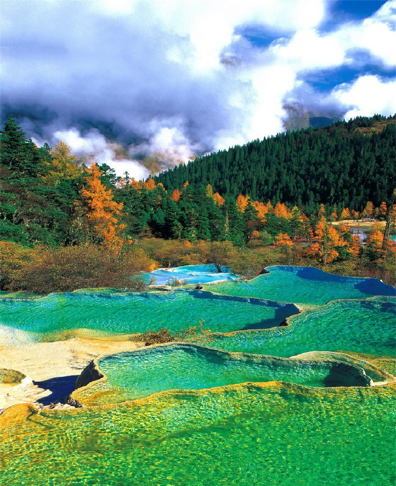

 THE BEACH Today we are sending you to China, to travel the southwest of the country and discover a hypnotizing landscape. We are talking about the Huanglong Scenic Reserve, part of the Huanglong National Park. Even if the conditions are a bit harsh, with an average temperature of 7 degrees Celsius all year round and altitudes that might be a challenge for most travelers, the amazing Huanglong Valley is definitely a place worth visiting. Huanglong Scenic Reserve is located in the southern part of the Minshan mountain range, at around 150 kilometers from Sichuan province’s capital Chengdu. Designated a World Heritage Site by UNESCO in 1992, Huanglong is famous for its scenery, with diverse forest ecosystems and karst formations like travertine pools, limestone shoals and many waterfalls. The icon of this area is the Yellow Dragon Gully, a 3.6 km long travertine that spreads like a massive golden dragon (due to its layered calcium carbonated deposit patterns) through the dense forests and glaciers in Huanglong Valley. The main part of these ponds and waterfalls start from the ancient Buddhist/Benbo temple placed on the top of the valley and ends at the Guest Welcome Pond. Depending on the season, these natural pools of different sizes and shapes can be colored in yellow, green, blue and brown. Beside the phenomenal landscape, Huanglong is also home to many endangered species including the giant panda and the Sichuan golden snub-nosed monkey. There are small chances to see one of the species close by, but this surely gives the place a certain magnetism. A 4.2 km wooden boardwalk that goes along the travertine can be accessed by visitors. The round trip takes about 4 hours. During the high season, a cable car is available as well. To get inside Huanglong National Park, you will have to take the bus from Jiuzhaigou Bus station in Chengdu. It leaves at 7:00 (takes 3,5 hours) and returns to Jiuzhaigou at 15:00 (or 15:30).The entrance ticket in Huanglong Scenic Reserve costs approximately 30 USD per person in the high season (1st of April – 15th of Nov.) and around 10 USD between 16th of November and the 31st of March.